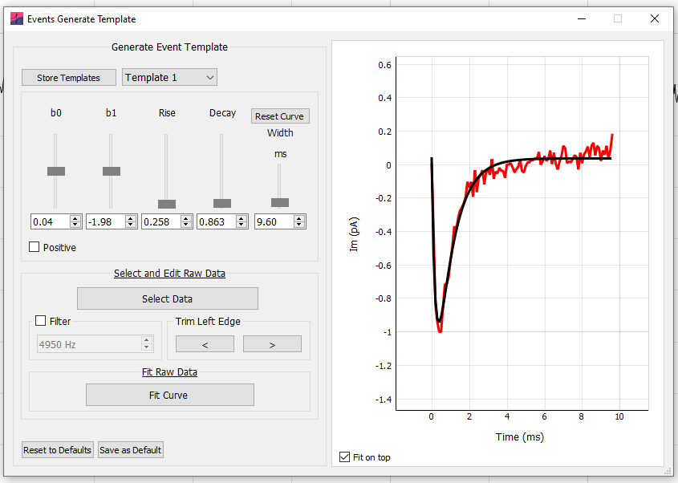
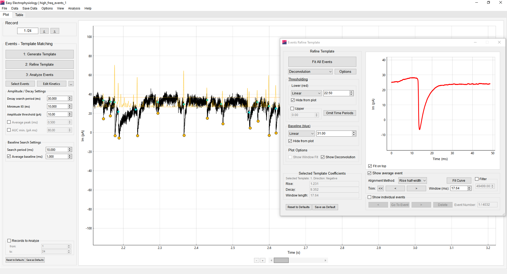
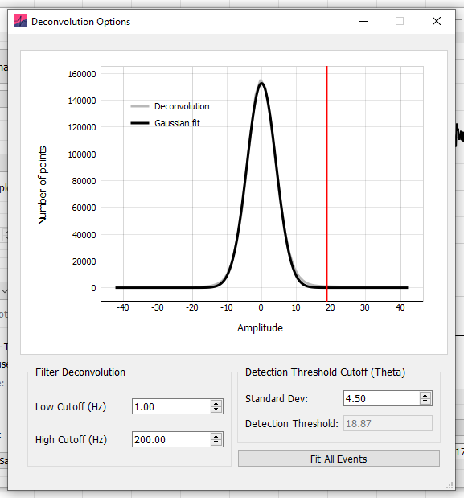
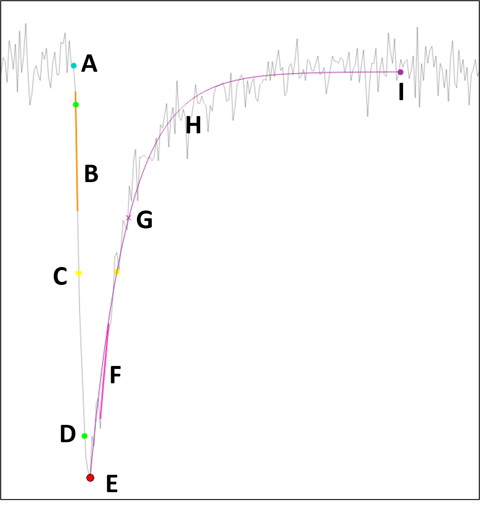
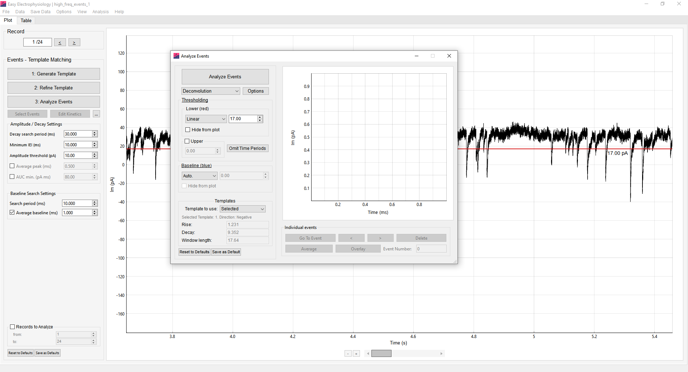
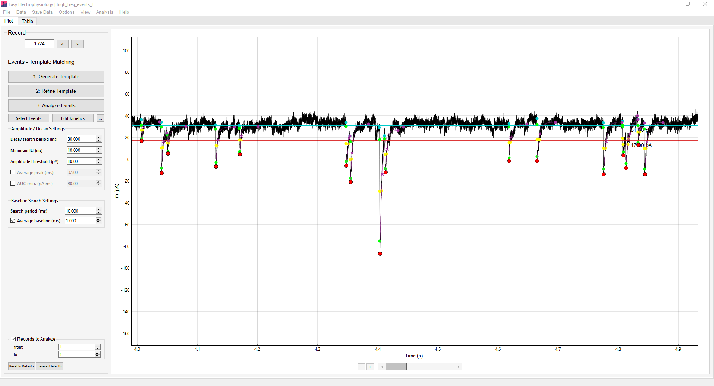
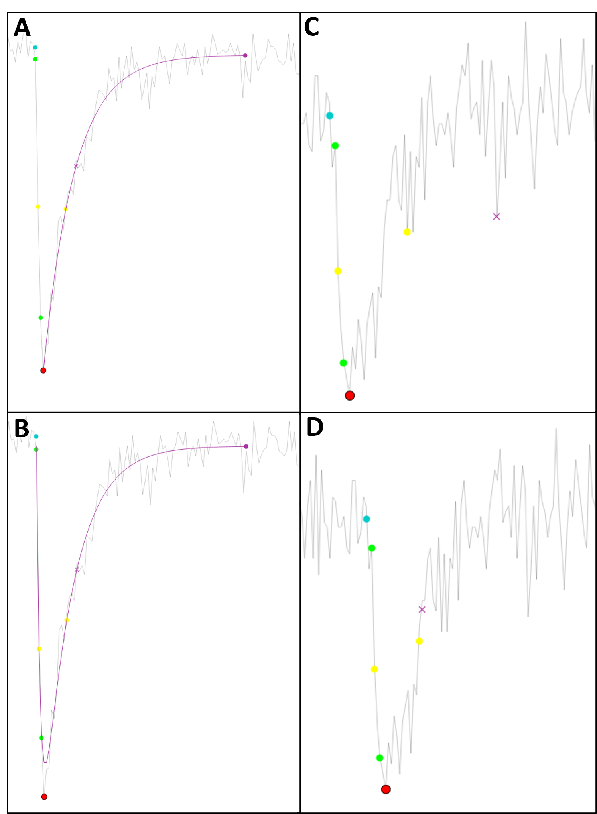
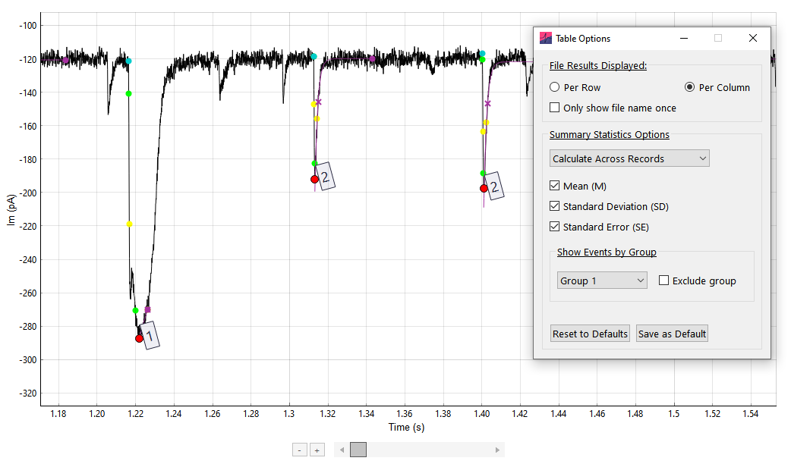

Events detection and kinetics
Overview
Easy Electrophysiology provides two options for events detection, Events Template Matching and Events Thresholding. For simplicity, all relevant options, graphs and results tables are shared between these Events detection methods (e.g. running an events analysis with Template Matching will overwrite a previous analysis with Thresholding).
Event detection
Both event-detection approaches share a range of settings that control event detection and exclusion. These are described in Events options below.
Template matching
Template matching relies on the generation of a template event in the form of a biexponential function (Jonas et al. 1993; see also Guzman et al. 2014). The template is generated by fitting a biexponential function to an exemplar event from the recorded data (the key parameters to fit are the rise and decay coefficients; see Appendix I). This ensures the biexponential rise, decay, and fitting window are tailored to the shape of the post-synaptic events to be detected. This initial event template can be further improved by fitting to the average of all detected events (see Refine Template for details).
Easy Electrophysiology implements three template-matching algorithms: the correlation method (Jonas et al. 1993), the detection criterion method (Clements and Bekkers 1997), and the deconvolution method (Pernia-Andrade et al. 2012).
The correlation and detection criterion methods compare the template with the data using a sliding window, but have limited temporal resolution and may fail to detect high-frequency, closely spaced events. In contrast, deconvolution is performed in the Fourier domain and can reliably detect closely spaced events.
Each approach produces a detection measure across the recording. Applying the relevant cutoff identifies contiguous regions as detected events. The interactive plots in Refine Template can be used to inspect the detection measure and assess performance.
Generating a template
The first step in template matching is to generate the template event. Click 1. Generate Template on the Events Template Matching analysis panel for template generation. A biexponential event template is shown on the graph with sliders and input boxes for manual adjustment of template coefficients. It is possible to increase the coefficients outside the slider range by typing the values directly into the input boxes. The coefficients that define the template shape are:
b0 and b1 – the offset and amplitude scaling parameters. These coefficients are left free during event detection and so are not important for template generation.
Rise – the biexponential rise time constant (defaults to \(0.5\ \mathrm{ms}\) from Jonas et al. (1993))
Decay – the biexponential decay time constant (defaults to \(5\ \mathrm{ms}\) from Jonas et al. (1993))
Width – the width (in \(\mathrm{ms}\)) of the event template.
The best way to generate a template event is to fit the biexponential function to a recorded event from the dataset. An event from the data can be selected by clicking Select Data and drawing around an event to fit. When selecting an event it is helpful to change the graph zoom settings to Two Button (Pan Left, Zoom Right) by right-clicking on the plot and choosing Mouse Mode › Two Button (Pan Left, Zoom Right). This allows the left button to zoom while selecting data with the right button.

Fitting the event
Once an event from the data is selected it will appear on the graph (red). The start of the event to fit can be shifted with the buttons in the Trim Left Edge box – the start point is critical for optimal fitting. The event from the data can also be filtered prior to fitting (8th order Bessel).
Clicking Fit Curve will fit the biexponential function to the event. This will change the coefficients in the top panel. These coefficients are now saved until Easy Electrophysiology is closed. To save these for the next session, click the Save button (see Saving and Resetting Option Defaults for details).
Storing templates for later use
Templates may be stored for later use and loaded by clicking the Store Template button in the top left of the Generate Template menu. This will bring up another window allowing the current template to be saved with an identifying name.
To save the current template, first enter the name in the Save Template Name text box and click Save Template.
To load a template as the current template, click on the template name (the row will become highlighted) and press Load Template. Note this will overwrite the coefficients in the current template.
To delete a stored template, click on the template name and press Delete Selected Template.
Generation of multiple templates for simultaneous analysis
Up to three templates can be used simultaneously for event detection (see Template to use for how to run analysis with multiple templates). The three templates can be accessed using the drop-down menu (Template 1 – 3) in the Generate Template menu.
The displayed template is the currently selected template and will be used for analysis when Selected is chosen in Analyze Events. When fitting a template to the data or loading one from Stored Templates, the coefficients will be stored in the currently selected template (e.g. Template 2). The Average Event will always be fit using the currently selected template.
Refining a template
The Refine Template window is used for i) assessing the fit of an event template and ii) generating a refined template by fitting to the average of all events detected with the initial template.
Clicking Fit All Events detects events using the currently selected template. Detected events are displayed on the graph with a filled yellow circle at the peak and their baseline in blue. The average of all detected event is plot on the graph in red. Options to align by Rise half-width (half-way up the event rise), Peak, and Baseline are provided in the Alignment Method drop-down box. The process of fitting to the average event is identical to fitting in Generate Template.
The dropdown menu at the top of the window can be used to select the event detection method. If Correlation or Detection Criterion is chosen, the desired cutoff value can be entered in the box next to the drop-down menu. Alternatively, if Deconvolution is selected, the cutoff can be adjusted by clicking Options (detailed below).
Assessing event detection
Clicking the Show (detection method name) button will show the detection measure overlaid on the plot. The cutoff value is shown as a horizontal line. This option is very useful for assisting in choosing a cutoff value, as its position in relation to the detected peaks can be observed. The detection measure units are scaled to fit to the plot for visualization purposes and cannot be interpreted directly.

For correlation and detection criterion methods, the Show Window Fit button will display the best-fit biexponential overlaid on the data of the main plot. When zoomed in, scrolling will move the biexponential along the data, allowing inspection of the fit at every timepoint. For this, it is convenient to use Two Button (Pan Left, Zoom Right) by right-clicking on the plot and choosing Mouse Mode › Two Button (Pan Left, Zoom Right).
Deconvolution options
In Deconvolution Options, a cutoff can be specified in the Standard Dev box. The cutoff is expressed in standard deviations of the detection-measure amplitude distribution. The default value of 3.5 selects events with a detection measure more than 3.5 standard deviations above the mean.
Additionally, the cutoff measure undergoes bandpass filtering which can affect its shape. Default values are 0.1 for the Low Cutoff (Hz) and 200 for High Cutoff (Hz). Changing the high cutoff will influence the height and sharpness of the detection measure peaks and is useful to adjust when selecting optimal values for your data. The best way to choose values is to show the deconvolution on the plot (click Show Deconvolution) and visually inspect how it changes when the filter settings are adjusted and analysis re-run.

Events Thresholding
Events Thresholding is a simpler method of event detection in which any datapoint that crosses a set threshold is considered an event. This method is less precise than the template matching method (e.g. a noise spike over threshold would be considered an event) but is less computationally demanding.
Kinetics
Event kinetics overview

A Baseline – The event baseline (filled blue circle) acts as both the baseline value and timepoint considered the start of the event. The baseline calculation method is set in Baseline Options (Analyze windows only) and modified with Baseline – Search Period (ms) and Average Baseline (ms).
B & F Max rise and decay slopes – The maximum slope on the rise or decay, calculated as a linear regression over \(n\) points (specified in Calculate Max Rise / Decay Slope).
C Half-width – The half-width is calculated as the full-width at half-maximum (FWHM). This is the time between two half-amplitude samples (on the rise and decay; displayed on the plot with filled yellow circles). The nearest samples to the ‘true’ half-amplitude are used to calculate the FWHM; as such Interpolate to 200 kHz can greatly improve accuracy. If a monoexponential curve is fit to the decay, or biexponential to the event, this will be used to find the decay, and rise and decay respectively for half-width calculation.
D Rise-time – The rise time is measured as the time between two timepoints (filled green circles), specified as the percentage of the event amplitude (peak minus baseline). These ‘percentage cut-offs’ can be changed using the Rise-time Cutoffs setting (10-90 rise-time is default, shown).
E Peak – The peak of the event can be smoothed using Average Peak (ms).
G Decay time – By default, this is the time between the event peak and the first sample at which the event has decayed to a specified percentage of the event amplitude (default 37%). The sample used is displayed on the graph with a purple cross. Alternatively, this can be set in Options › Events to a second method that uses two points similar to the rise-time calculation. If a monoexponential or biexponential curve is fit to the data, this will be used to find the decay time and half-width.
The percentages are set with the Decay time setting. The period to search for the decay-time values can be set using Decay Search Period (ms).
H Decay fit – A monoexponential fit to the decay is displayed with a purple line. The tau of this fit is reported in the Events results table (if this fit is good, this result should closely match the decay time calculated with the first method when set to 37%).
I Decay endpoint – If a monoexponential decay is fit, the automatically detected end of the event is used as the fit endpoint (shown with a filled purple circle). See Decay Search Period (ms) for details.
Events options
Event detection window options

Lower Threshold
This is the minimum value that an event must pass to be considered within threshold, specified in \(\mathrm{pA}\). It is dependent on the direction of events (e.g. for a threshold of \(5\ \mathrm{pA}\), positive events must contain a datapoint \(> 5\ \mathrm{pA}\), negative events must contain a datapoint \(< 5\ \mathrm{pA}\)). The Lower Threshold is displayed on the graph in red. Using the dropdown menu, it can be specified as:
Linear – A straight horizontal line across the trace. This can be moved up and down with the mouse, or the desired threshold value typed into the input box.
Curve – A polynomial is fit to the data and used as the threshold. This can be moved up or down by typing the desired offset into the input box. The order of polynomial fit can be changed by clicking Options › Events Analysis – Misc. Options › Dynamic Curve polynomial order (under Other Options). Note fitting of higher-order polynomials slows performance.
Drawn – Setting the drop-down menu to Draw then clicking the Draw Threshold button will enter threshold drawing mode. The cursor will change to a pointed hand; clicking the graph will begin drawing a baseline. The first click will draw a horizontal line from the left edge of the record to the cursor. Subsequent clicks will draw a straight line from the previous point to the cursor. To finish drawing the threshold, click the right edge of the graph past the final plot datapoint. This mode is particularly useful when there are large, sudden changes in the data’s baseline.
Note that if a new file is loaded which is longer than the currently drawn threshold, the threshold will be extended as a straight line to the new end timepoint.
RMS – The root mean squared error (RMS) of the data, multiplied by a scalar \(n\), can also be used as a minimum threshold. The minimum threshold is the baseline minus \(n \times \mathrm{RMS}\) for negative events, or the baseline plus \(n \times \mathrm{RMS}\) for positive events, and is shown on the plot in red. The baseline to which the RMS is added is determined by the choice of event baseline (if Auto. is selected, the mean of the data will be used separately for each record).
When selecting RMS from the drop-down menu, clicking Settings will open a window allowing choice of settings for calculating the RMS. The multiplier \(n\) used to scale the RMS (e.g. \(2 \times \mathrm{RMS}\)) can be typed into the input box.
If All Data (Per Record) is selected, the RMS will be calculated separately for each record, using the mean of the record as calculation baseline. Alternatively, selecting Within Selected Region will allow calculation of the RMS within a movable region on the graph.
Selecting the option Baseline used: mean will use the mean of the data within this region as the calculation baseline for the RMS. Otherwise, if Baseline used: selected baseline then the currently selected baseline will be used as the calculation baseline during RMS calculation. In Baseline used: selected baseline mode, for Linear, Curve, and Drawn baselines, the RMS is calculated as the root mean square error between the baseline and data. For Auto., the calculation baseline is the mean of the entire record (not the data within the bounds).
Baseline Options (Analyze windows only)
The event baseline can be detected automatically (Auto.) or set as the first sample at which the data crosses a pre-defined baseline value. The baseline datapoint acts as both the baseline \(I_\mathrm{m}\) value and the event foot (i.e. the timepoint at which the event starts).
For automatic detection, the baseline is first estimated per-event (see Legacy options). Next, the method of Jonas et al. (1993) (the intersection between the baseline and a straight line drawn through the 20-80 rise time) is used to shift the x-axis position of the baseline to the point of the event foot. Together, these methods result in robust simultaneous estimation of the event baseline and foot.
This baseline value can also be specified in a similar way as Lower Threshold (i.e. Linear, Curve, or Drawn). This will search the baseline search region for the first datapoint that has crossed this baseline threshold and set it as the baseline. If no datapoint crosses the baseline threshold within the search region, the closest value to the threshold is used.
Upper Threshold
The upper threshold is defined as the maximum value an event can pass before it is excluded from analysis (e.g. for a \(100\ \mathrm{pA}\) threshold, any positive event \(> 100\ \mathrm{pA}\) or negative event \(< 100\ \mathrm{pA}\) will be excluded). This option can be specified by typing the absolute value in the input box. This is particularly useful for excluding large noise spikes e.g. stimulus artefacts.
Omit Time Periods
Omitting time periods from analysis can be useful for event recordings with interleaved stimulation. The Omit Time Period button opens a table for inputting time periods to omit from analysis. Add the start time of the period to exclude in the first column and the end time in the second column. Multiple time periods to exclude can be input, one on each row.
When set to absolute, the events are excluded based on the absolute value of the omit times. When set to relative, the events are excluded based on the omit times relative to the start of the record on which the event occurs.
Template to use
Event detection may be run with up to three different templates simultaneously. The Templates to Use specifies the templates to use for the analysis (Selected, Template 1 and 2, or Template 1, 2 and 3). See Generation of Multiple Templates for Simultaneous Analysis for details on generating the three templates. The Average Event and manually selected events are always fit using the currently selected template.
If set to Selected, the currently selected template (in Generate Template) is used. The coefficients of the currently selected template can be seen directly underneath the drop-down menu. Otherwise, templates 1 and 2, or 1, 2 and 3 are used depending on the selected option.
Analysis with multiple templates is run in the same way as a normal analysis. On the plot, the events detected by different templates can be distinguished by the peak color (Template 1: red, Template 2: pale blue, Template 3: pale orange). In the results table, the column Template holds the number of the template that was used to detect the event. To set the behavior in the case that the same event is detected by two different templates, see Multi-template event assignment.
Event fitting analysis panel options
This panel contains detection and kinetics options which are shared between Events Template Matching and Events Thresholding.
Peak Direction (Events Threshold only)
Direction of the events to detect.
Minimum IEI (ms)
The minimum inter-event interval (IEI) between event peaks in milliseconds. For example, if set to \(1000\ \mathrm{ms}\), detected events will be at least \(1\ \mathrm{s}\) apart. Detected events that are closer than the local minimum period (i.e. \(1\ \mathrm{s}\) in our example) will be excluded, with smallest events excluded first.
Decay Search Period (ms)

When fitting a monoexponential function to the event decay, the end of the event is estimated as the closest datapoint to the baseline (using a weighting and smoothing algorithm to account for noise and complex waveforms). This end-of-event point is indicated with a closed purple circle on the graph. The monoexponential function is fit between the event peak and the end-of-event datapoint. Here, the decay search period indicates the period to search for the end-of-event datapoint.
If a monoexponential curve is not fit to the decay, Decay Search Period (ms) defines the search region, starting at the event peak, for the Decay times value.
Amplitude Threshold (pA)
Sets the minimum amplitude (event peak minus baseline; absolute value) for detected events. Any events with an amplitude smaller than this threshold are excluded.
Average Peak (ms)
Period to smooth around the event peak. The intuitive method of peak averaging is to simply average around the peak detected from unsmoothed data. However, this method often detects the peak at off-center noise spikes (i.e. not centered on the natural peak of the event).
In Easy Electrophysiology, the event is first detected without smoothing. Then, the event is smoothed with a window of size specified with Average Peak (ms). Finally, the new peak is determined from the smoothed data in a small region around the previously detected peak (±3 * Average Peak (ms)). This method simultaneously smooths the peak \(I_\mathrm{m}\) value as an average of surrounding points and adjusts the position to reduce noise bias.
AUC min. (pA ms)
Area Under Curve (AUC) threshold can be set to exclude putative events with small areas. Note this is the absolute value (as for negative events area is defined as negative area) (e.g. if set to \(5\), negative events with area \(-10\ \mathrm{pA\,ms}\) will be included, but \(-3\ \mathrm{pA\,ms}\) excluded).
Baseline – Search Period (ms)
The time period before the event peak to search for the baseline. When baseline detection method is set to Auto. (in the Analyze Events window), this specifies the search period for automated baseline detection. For all other baseline options (Linear, Curve, Drawn) this is the search period for the first datapoint that crosses the baseline (see Baseline Options (Analyze windows only)).
Average Baseline (ms)
The period over which to average the event baseline. First, the event baseline is detected with the selected method (Auto., Linear, Curve, or Drawn). Then, the baseline value is set to the average of a window before the baseline. Average Baseline (ms) sets the size of this averaging window.
Events options window
Additional event detection and analysis options can be found by clicking Options › Events. These options are shared between Events Template Matching, Events Thresholding, Average Event and Curve Fitting (biexponential event) analysis.
Decay Endpoint search method
This option selects the method used to calculate the endpoint of the event (i.e. when the event is considered to have finished). This is the period across which the decay times parameter will be searched, and act at the endpoint for monoexponentially and biexponential fits. A third, older event endpoint detection method is available in Legacy options.
Entire Search Region, the event endpoint will be at the exact time after the peak specified in Decay Search Period (ms) (e.g. if Decay Search Period (ms) is \(30\ \mathrm{ms}\), and the peak is detected at \(100\ \mathrm{ms}\), the decay endpoint will be at timepoint \(130\ \mathrm{ms}\)). However, if another event occurs before this decay endpoint, the decay endpoint will be moved to one sample prior to the next event baseline.
First Baseline Cross, the first datapoint that crosses the baseline is used as the event endpoint. The data is smoothed slightly (3 samples) to avoid large noise spikes that may occur during the decay period. If no sample in the search period crosses the baseline, the datapoint closest to the baseline is used. Similar to Entire Search Region, if the next events baseline is before the detected decay endpoint, the decay endpoint will be moved.
Interpolate to 200 kHz
Interpolate the event to \(200\ \mathrm{kHz}\) prior to decay-time, rise-time and half-width analysis (linear interpolation). First, the event peak, baseline and event end-point is calculated. Then the event (i.e. the period between the baseline and event end-point) is interpolated before decay, rise and half-width analysis.
Rise-time Cutoffs
Specifies the cutoffs for rise-time calculation (by default, the 10-90 rise-time is used).
Decay time
These options specify the method used to calculate the decay time, and their exact percentages. By default, the time from peak to a value at some specified % of the amplitude is the decay time. Alternatively, the second method (between points) is calculated similar to the rise time.
Calculate Max Rise / Decay Slope
The maximum rise and decay slopes for each event will be calculated if this option is on. It is not calculated by default as it may increase analysis time, particularly if the slope is calculated over many samples.
The maximum slope is calculated as a regression over \(n\) points. The number of samples to calculate the regression over can be specified separately for the rise and decay. If the number of samples to calculate the regression is larger than the number of samples in the rise / decay, this parameter will not be calculated for the event.
In some cases, noise spikes can bias the calculation of the maximum slope. As such, an option to smooth the rise / decay before calculation of maximum slope is provided.
Finally, it is recommended to select Always use baseline crossing as max slope search endpoint. This ensures that the algorithm will stop searching for the maximum slope close to the point when the decay returns to baseline. Otherwise if this is unchecked and Decay Endpoint search method is set to Entire Search Region, the entire Decay Search Period (ms) will be searched for regression, leading to poorer accuracy and increased analysis time.
Event Curve Fitting
Event curve fitting provides options for fitting a biexponential function to the entire event (Biexponential), monoexponential function to the decay period (Monoexponential to Decay), or not fitting (Don’t Fit Event).
If a biexponential is fit, half-width and decay times will be calculated on the fit. If a monoexponential is fit, the decay part of the half-width and decay times will be calculated from the fit. If Don’t Fit Event is selected it is recommended to slightly smooth the decay period for calculation of decay times and half-width to reduce the influence of noise spikes that may occur after the true decay mid-point, as shown in the examples below.
Options are provided to ensure only optimal fits are included in the results. Two measures to assess the fit are provided as a basis to exclude or attempt to improve the fit – the R2 or fitted-coefficient.
If excluding based on R2 or bounds, any event with a fit lower than the R2 value or outside of the coefficient bounds will be excluded from the results. Alternatively, it is possible to try and improve the fit by adjusting the first sample of the data the function is fit to.
Both biexponential and monoexponential fitting are extremely sensitive to the position of the event foot and peak, respectively. For monoexponential fits, new-start-points both to the right and left of the peak will be attempted. For biexponential fits, samples only to the right of the baseline will be attempted, as choosing samples further from the natural foot of the event typically worsens biexponential fitting. If improvement is not sufficient such that the fits are within threshold, the event will be excluded.

For biexponential fits, the starting estimate for the coefficients will be taken from the template used to detect the event in Events Template Matching analysis. Otherwise, for Events Thresholding and Curve Fitting analysis the default coefficients specified in Template Matching – Initial Coefficients will be used.
These options can also be useful for excluding erroneously detected events. The most typical cause of poor fits is that the putative event is in fact a noise spike.
Frequency Data
The Type menu sets frequency-data plots to Cumulative Probability or Histogram.
Clicking More Options opens the Frequency Options window. Binning Method can be set to Auto., Custom Bin Number, Custom Bin Size, or Num events divided by. When using custom bin sizes, select the event parameter and enter its bin size. Fix bin start values sets a fixed starting value for that parameter’s bins. X axis display places plotted values at the Bin Centre, Left Edge, or Right Edge.
Plots
Show Area Under Curve (AUC) (may slow performance) displays the area under each event on the plot. Plotting the AUC may reduce performance.
Other Options
Threshold manually selected events – selected by default. When selected, Amplitude Threshold (pA), Omit Start Times, Threshold – Lower, and Threshold – Upper are applied to manually selected events. Turn this option off to prevent these exclusion criteria from being applied to manually selected events.
Dynamic curve polynomial order specifies the order of the polynomial used in Lower Threshold and Baseline curves. Fitting high-order polynomials will increase computation time.
Multi-template event assignment – If set to To best fitting template, the template with the highest value of the detection measure (see Events Template Matching) is used. If set to To first template used 1 > 2 > 3, the first template that detects the event (in the order 1, 2, 3) will be used.
Template Matching – Initial Coefficients specifies the default coefficients for the Events Template Matching template generation, Curve Fitting (biexponential event), and biexponential fitting to events in Events Thresholding.
Reset to Defaults restores the default Events options. Save as Default saves the current Events options as the defaults for future use.
Manual editing
Easy Electrophysiology offers a high degree of flexibility when it comes to manual adjustment of event detection and analysis. Erroneously detected events may be discarded, or undetected events manually selected. Furthermore, the position of event baseline and foot, and endpoint can be easily adjusted.
Select events
To manually select an event, click the Manually Select Events option on the Analysis Panel (for both Events Template Matching and Events Thresholding). The cursor will change to a crosshair and clicking-and-dragging on the graph will draw a circle. The peak (minimum for negative events, maximum for positive events) in this region will be taken as the new event peak.
All current settings (e.g., smoothing and search periods) apply to manually selected events; see Threshold manually selected events for the exclusion criteria that can be disabled. However, the fitting method must be the same for every event in an analysis, as such the fit of a manually selected event will always match the analysis used.
Reject events
To discard detected events, click twice on the filled circle at the peak of an event. The first click will prime the event for deletion (the circle will turn blue) and the second click will delete the event from analysis. Alternatively, holding D while selecting multiple event peaks by click-and-dragging the mouse on the main plot will delete multiple events at once.
Edit kinetics
The position of the event baseline and decay endpoint can be manually adjusted. Clicking Edit Kinetics will enter Edit Kinetics mode, indicated by the cursor changing to a pointing hand. To edit a kinetic in this mode, first click on the baseline (light blue circle) or event endpoint (purple circle). Next, the cursor will change to a crosshair. Click on the desired position for the kinetic, and the kinetic will be moved and the other event parameters re-analyzed.
Grouping detected events
Event grouping makes it possible to select subsets of detected events and restrict results display to these subsets (or, excluding a subset of events). To group selected events following event detection, click the peak of an event holding the group number you would like to assign to the event on the keyboard. The group number can range from 1 to 5.
To selectively view grouped events on the main Table tab table, click Analysis › Table Options. In the Show Events by Group section, the group to selectively display can be chosen from the drop-down menu. To display all events excluding the selected group, click the Exclude group button.

Saving
Events analysis (all detected events, plots and tabular results) can be saved for later use. To save the current analysis, click Save Data and Save Events Analysis. The events analysis is stored as a .json file.
To re-load the events analysis, click Save Data › Load Events Analysis and select the previously saved JSON file. Note that the file name, number of records and number of samples of the data file are saved with the analysis results to ensure the event analysis matches the recording file. As such, the recording filename should not be changed in between saving and loading events results.